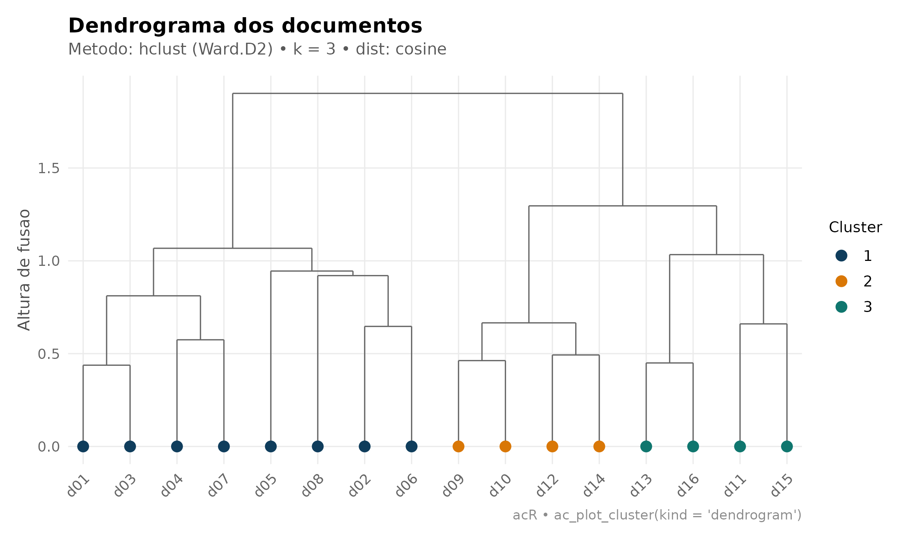
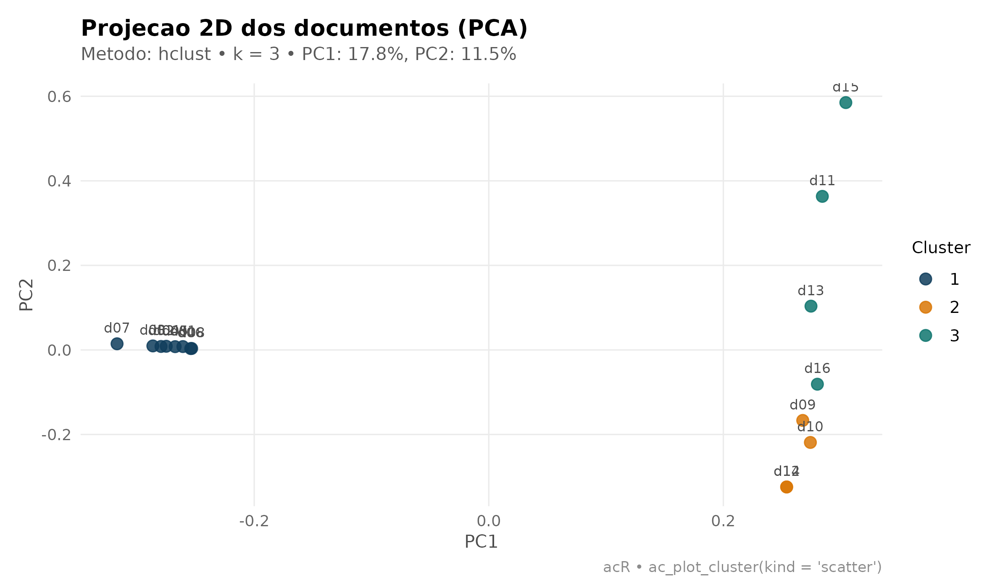
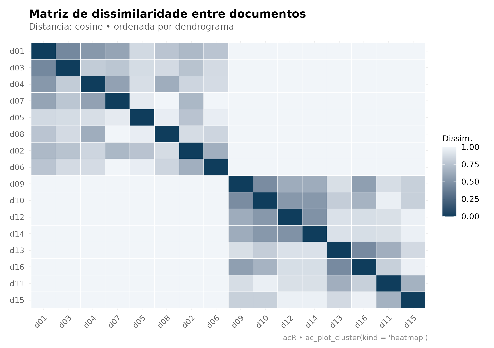
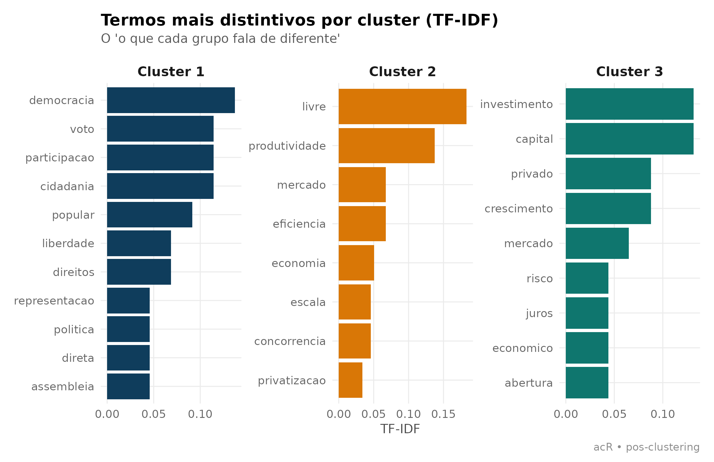
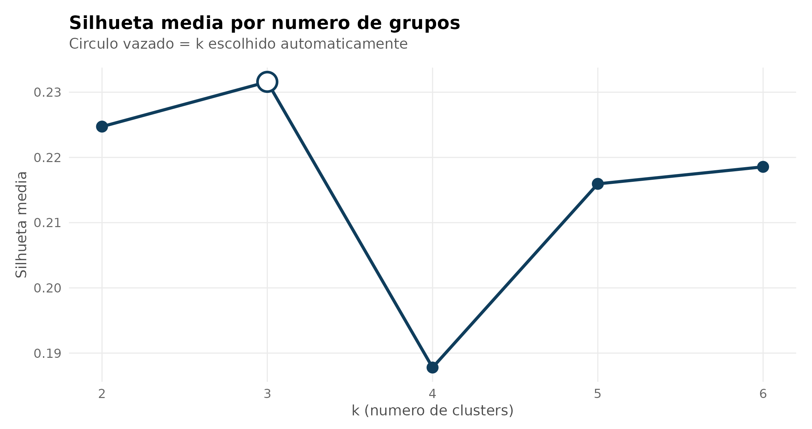
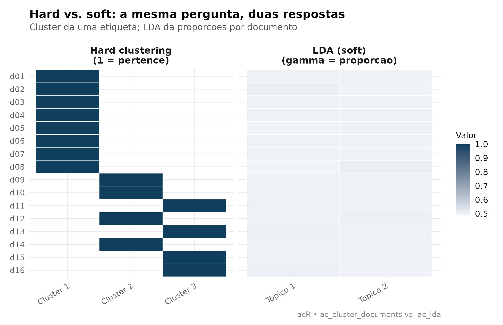
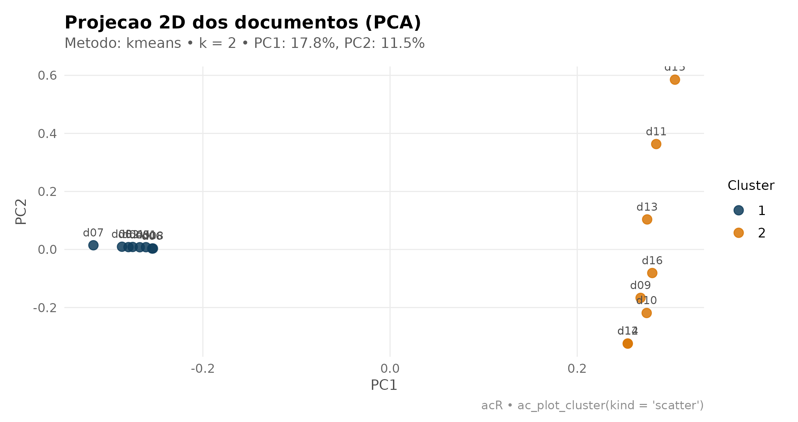

Por que agrupar documentos?
Nem toda pesquisa começa com um livro de códigos pronto. Às vezes você tem centenas de discursos, proposições ou entrevistas e precisa descobrir tipologias latentes — antes de rotular, antes de contar, antes de qualquer LLM. É aí que entra o clustering: um algoritmo lê a matriz de vocabulário e devolve uma etiqueta por documento, agrupando o que se parece por co-ocorrência de termos.
1. Três famílias, três leituras teóricas
Antes de rodar qualquer código, vale entender que “descobrir grupos em texto” é uma família de técnicas com três leituras teóricas diferentes, cada uma respondendo a uma pergunta distinta:
1.1 Hard clustering (o que esta vignette faz)
Cada documento pertence a um único grupo. A saída é
uma etiqueta cluster ∈ {1, 2, …, k}. É o mundo do
ac_cluster_documents(): hierárquico (hclust),
kmeans e pam.
- Modelo mental: cada documento é do tipo A ou do tipo B.
- Pergunta: “que tipologias existem no corpus?”
- Boa para: amostragem estratificada, dendrogramas metodológicos, triagem antes de codificação qualitativa, criação de estratos para análise comparativa.
1.2 Soft (fuzzy) clustering
Cada documento tem um vetor de graus de
pertencimento que soma 1 entre k clusters. Um
documento “60% tipo A, 40% tipo B” existe. Fuzzy c-means
(e1071::cmeans()) e misturas gaussianas
(mclust) são os exemplos clássicos.
- Modelo mental: documentos são pontos numa zona cinzenta entre protótipos.
- Pergunta: “quão típico deste grupo cada documento é?”
- Boa para: identificar documentos fronteiriços (bons candidatos a revisão humana), ranquear documentos por representatividade dentro de um grupo.
1.3 Modelos de tópicos (LDA)
Cada documento é uma mistura probabilística de
tópicos, e cada tópico é uma distribuição sobre
palavras. É o mundo do ac_lda(): o output é uma
matriz γ (gamma) de probabilidades documento × tópico e
uma matriz β (beta) de probabilidades tópico ×
palavra.
- Modelo mental: o autor amostrou tópicos com certas proporções e, para cada palavra, sorteou um tópico e depois uma palavra dele.
- Pergunta: “que temas coexistem em cada documento e como eles se compõem?”
- Boa para: discurso parlamentar, artigos jornalísticos, textos longos com múltiplos temas por documento.
1.4 Como escolher?
| Se você quer… | Use |
|---|---|
| Uma partição limpa, uma etiqueta por documento | Hard clustering (esta vignette) |
| Detectar documentos fronteiriços, quão típico de um grupo cada é | Soft clustering (fuzzy c-means) |
| Descobrir temas que se misturam em cada texto | LDA (veja vignette("lda")) |
| Rotular documentos com categorias pré-definidas por um pesquisador | LLM (veja vignette("qualitativo-llm")) |
Um bom pipeline muitas vezes combina essas técnicas: hard clustering para triagem inicial, LDA para entender temas dentro de cada grupo, LLM para codificar categorias teoricamente motivadas, revisão humana nos documentos que caírem em fronteiras.
2. Um corpus de dois blocos
Para tornar o exemplo transparente, vamos construir um corpus com dois blocos temáticos deliberadamente separados: democracia participativa de um lado, economia de mercado do outro. O clustering deve, sem supervisão, reencontrar essa divisão.
df <- data.frame(
id = paste0("d", sprintf("%02d", 1:16)),
tema_real = rep(c("democracia", "mercado"), each = 8),
texto = c(
"democracia participacao voto liberdade cidadania popular",
"cidadania direitos participacao democracia representacao politica",
"voto direitos liberdade cidadania soberania popular",
"democracia voto participacao popular assembleia direta",
"participacao social democracia direitos coletivos comunidade",
"cidadania voto democracia representacao plural minorias",
"liberdade participacao politica assembleia popular deliberacao",
"democracia direta cidadania voto plebiscito referendo",
"mercado economia eficiencia privatizacao competicao livre",
"privatizacao mercado livre eficiencia produtividade lucro",
"economia crescimento investimento mercado capital juros",
"eficiencia mercado economia livre concorrencia produtividade",
"mercado privado investimento economia lucro capital risco",
"economia livre mercado eficiencia produtividade escala",
"crescimento economico mercado investimento privatizacao abertura",
"mercado competicao eficiencia lucro capital privado"
),
stringsAsFactors = FALSE
)
corpus <- ac_corpus(df, text = texto, docid = id)
corpus
#> # A tibble: 16 × 3
#> doc_id text tema_real
#> <chr> <chr> <chr>
#> 1 d01 democracia participacao voto liberdade cidadania popular democrac…
#> 2 d02 cidadania direitos participacao democracia representacao pol… democrac…
#> 3 d03 voto direitos liberdade cidadania soberania popular democrac…
#> 4 d04 democracia voto participacao popular assembleia direta democrac…
#> 5 d05 participacao social democracia direitos coletivos comunidade democrac…
#> 6 d06 cidadania voto democracia representacao plural minorias democrac…
#> # ℹ 10 more rowsGuardei tema_real fora do corpus para poder validar
depois: o clustering não vê essa coluna; só o
texto.
3. Ajuste em três linhas
clust <- ac_cluster_documents(corpus)
clust
#>
#> Documentos por cluster:
#>
#> 1 2 3
#> 8 4 4Os padrões cobrem 80% dos casos:
- hclust + Ward.D2 — hierárquico, produz dendrograma interpretável.
- TF-IDF — palavras raras e discriminantes contam mais.
- Distância cosseno — o clássico em texto (invariante a tamanho de documento).
-
kautomático por silhueta — testak ∈ {2, …, 8}e escolhe o melhor (requer pacotecluster).
4. Seis formas de olhar para o mesmo cluster
4.1 Dendrograma — a árvore das fusões
Mostra a ordem em que documentos foram unidos e a altura de cada fusão. Cortes altos separam grupos sólidos; cortes baixos indicam agrupamentos frouxos.
ac_plot_cluster(clust, kind = "dendrogram")
4.2 Projeção PCA — a geometria do corpus
Cada documento vira um ponto no plano das duas componentes principais. Documentos com vocabulário parecido ficam próximos; a cor mostra a divisão do algoritmo.
ac_plot_cluster(clust, kind = "scatter")
4.3 Mapa de calor — a assinatura da separação
Ordena os documentos pelo dendrograma e desenha a matriz de dissimilaridade inteira. Blocos escuros na diagonal são o carimbo de qualidade de um clustering bem-sucedido.
ac_plot_cluster(clust, kind = "heatmap")
4.4 Termos mais distintivos por cluster
Este gráfico responde à pergunta que interessa depois de rodar o modelo: “o que cada grupo fala de diferente?”. Juntamos a etiqueta do cluster ao TF-IDF e mostramos os 8 termos mais fortes por grupo.
tokens_com_cluster <- corpus |>
ac_clean() |>
ac_count() |>
left_join(clust$assignments, by = "doc_id") |>
group_by(cluster, token) |>
summarise(n = sum(n), .groups = "drop") |>
rename(doc_id = cluster) |>
mutate(doc_id = paste0("Cluster ", doc_id))
tfidf_cluster <- ac_tf_idf(tokens_com_cluster)
top_por_cluster <- tfidf_cluster |>
group_by(doc_id) |>
slice_max(tf_idf, n = 8) |>
ungroup() |>
mutate(token = tidytext::reorder_within(token, tf_idf, doc_id))
ggplot(top_por_cluster, aes(tf_idf, token, fill = doc_id)) +
geom_col(show.legend = FALSE) +
tidytext::scale_y_reordered() +
facet_wrap(~ doc_id, scales = "free") +
scale_fill_manual(values = ac_palette(clust$k)) +
labs(
title = "Termos mais distintivos por cluster (TF-IDF)",
subtitle = "O 'o que cada grupo fala de diferente'",
x = "TF-IDF", y = NULL,
caption = "acR • pos-clustering"
) +
theme_ac()
4.5 Curva de silhueta — escolhendo k visualmente
Quando o k automático parecer arbitrário, olhe para a
curva. A silhueta média de cada k diz o quão coeso
é o agrupamento naquele número de grupos. Picos claros são bons; platôs
indicam que a divisão seguinte é quase tão boa quanto.
if (requireNamespace("cluster", quietly = TRUE)) {
ks <- 2:6
sils <- vapply(ks, function(k_try) {
ac_cluster_documents(corpus, k = k_try)$silhouette
}, numeric(1))
df_sil <- data.frame(k = ks, silhueta = sils)
ggplot(df_sil, aes(k, silhueta)) +
geom_line(color = ac_palette(1), linewidth = 1.1) +
geom_point(size = 3.5, color = ac_palette(1)) +
geom_point(
data = df_sil[which.max(df_sil$silhueta), ],
aes(k, silhueta),
size = 6, shape = 21, stroke = 1.4,
fill = "white", color = ac_palette(1)
) +
scale_x_continuous(breaks = ks) +
labs(
title = "Silhueta media por numero de grupos",
subtitle = "Circulo vazado = k escolhido automaticamente",
x = "k (numero de clusters)", y = "Silhueta media"
) +
theme_ac()
}
4.6 Hard vs. soft — comparando com LDA
Este é o gráfico mais didático da vignette: mostra lado a lado como hard clustering e LDA veem o mesmo corpus. À esquerda, cada linha do heatmap é um documento e cada coluna, o cluster ao qual ele pertence (binário: 0 ou 1). À direita, cada linha é o mesmo documento e cada coluna é a proporção γ do tópico LDA — um gradiente contínuo.
lda_fit <- ac_lda(corpus, k = 2, seed = 42)
hard <- clust$assignments |>
mutate(valor = 1, tipo = paste0("Cluster ", cluster)) |>
select(doc_id, tipo, valor)
soft <- lda_fit$documents |>
mutate(tipo = paste0("Topico ", topic), valor = gamma) |>
select(doc_id, tipo, valor)
plot_df <- bind_rows(
hard |> mutate(painel = "Hard clustering\n(1 = pertence)"),
soft |> mutate(painel = "LDA (soft)\n(gamma = proporcao)")
) |>
mutate(doc_id = factor(doc_id, levels = rev(sort(unique(doc_id)))))
ggplot(plot_df, aes(tipo, doc_id, fill = valor)) +
geom_tile(color = "white") +
facet_wrap(~ painel, scales = "free_x") +
scale_fill_gradient(low = "#F1F5F9", high = ac_palette(1), name = "Valor") +
labs(
title = "Hard vs. soft: a mesma pergunta, duas respostas",
subtitle = "Cluster da uma etiqueta; LDA da proporcoes por documento",
x = NULL, y = NULL,
caption = "acR • ac_cluster_documents vs. ac_lda"
) +
theme_ac() +
theme(axis.text.x = element_text(angle = 30, hjust = 1))
Note como o hard clustering sempre pinta uma célula por linha (o documento é do grupo A ou do grupo B), enquanto o LDA distribui massa — a maior parte dos documentos é ~90% de um tópico, mas alguns ficam repartidos. É a mesma tipologia latente, expressa em duas métricas diferentes.
5. Validando contra a verdade
Como guardamos tema_real fora do modelo, dá para
conferir a acurácia da partição:
validacao <- clust$assignments |>
mutate(tema_real = df$tema_real[match(doc_id, df$id)]) |>
count(tema_real, cluster)
validacao
#> # A tibble: 3 × 3
#> tema_real cluster n
#> <chr> <int> <int>
#> 1 democracia 1 8
#> 2 mercado 2 4
#> 3 mercado 3 4Se o algoritmo separou corretamente, cada tema_real deve
concentrar-se num único cluster (permutação de rótulos é esperada — o
clustering não sabe qual grupo é “democracia” ou “mercado”, só que são
diferentes).
6. Escolhendo o método
ac_cluster_documents() aceita três algoritmos:
| Método | Quando usar |
|---|---|
hclust |
Padrão. Você quer dendrograma, ou não sabe k de
antemão. |
kmeans |
Corpus grande (milhares de documentos), você já sabe k,
quer rapidez. |
pam |
Robusto a outliers; devolve medoides reais (documentos exemplares). |
pam requer o pacote cluster instalado; os
demais rodam com apenas o stats base.
clust_km <- ac_cluster_documents(corpus, method = "kmeans", k = 2)
ac_plot_cluster(clust_km, kind = "scatter")
7. E depois? Integrando com o pipeline
Fluxo típico onde clustering é etapa prévia:
-
ac_cluster_documents()particiona o corpus emkgrupos. - Amostre
ndocumentos por cluster para leitura humana. - Use as leituras para escrever um codebook inicial
com
ac_qual_codebook(). - Aplique o codebook ao corpus inteiro com
ac_qual_code(). - Se quiser refinar temas dentro de um cluster, rode
ac_lda()só naquele subcorpus.
Isso reduz o custo cognitivo do primeiro contato com o corpus: em vez de enfrentar centenas de documentos aleatórios, você lê um punhado de exemplares de cada tipologia latente.
Referências
- Blei, D. M., Ng, A. Y., & Jordan, M. I. (2003). Latent Dirichlet Allocation. JMLR, 3, 993–1022. — o paper original do LDA.
- Bezdek, J. C. (1981). Pattern Recognition with Fuzzy Objective Function Algorithms. Plenum. — fuzzy c-means.
- Kaufman, L. & Rousseeuw, P. J. (1990). Finding Groups in Data. Wiley. — PAM e silhueta.
- Manning, C., Raghavan, P. & Schütze, H. (2008). Introduction to Information Retrieval. Cambridge University Press. Cap. 16–17.
- Murtagh, F. & Legendre, P. (2014). Ward’s hierarchical agglomerative clustering method: Which algorithms implement Ward’s criterion? Journal of Classification, 31(3), 274–295.